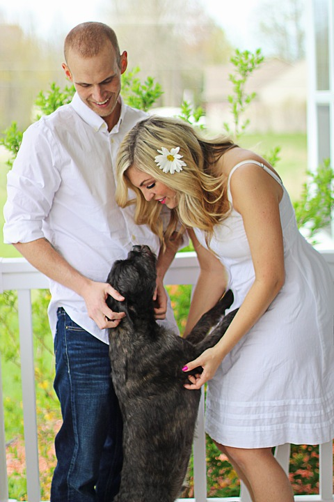
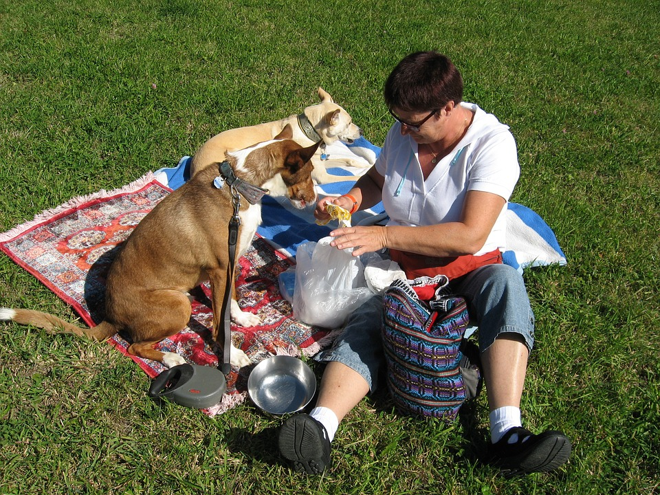

Mike and Rebecca Fox
We started using Barks ’N Rec last year. My husband and I bought a new puppy, but even though we were going to the dog park every day, we never met any new friends. Our puppy, Earl, is very shy, so Barks ’N Rec was perfect for our family! We were able to find great, local dog-owners with other small dogs who didn’t intimidate Earl. Through Barks ’N Rec, Earl has gotten much better at socializing with new dogs, and us humans have met great friends as well.

Chun Ko
I found out about Barks ’N Rec through my close friend Amanda, who has sworn by it for the last year. I was having trouble with my dog Landis, who is a large Great Dane. Though Landis is extremely sweet and friendly, it’s hard for him to play with the other (always smaller) dogs at our neighborhood dog park because he loves to swim, and the other dogs can’t keep up with him. Though Barks ’N Rec, Landis and I were matched with Bryan, Olivia, and their German Shepherd named Zack. We filtered for people with large dogs who love to swim, play with rope toys, and go on long walks, and there they were! Since matching on Barks ’N Rec, the group of us have walked our dogs together countless times, and hung out with “just humans” at a bar a few times too!

Lilly Hammond
My dog Bentley and I started using Barks ’N Rec after we moved to Seattle from Portland two years ago. Back in Portland, Bentley used to have a big pack of dogs that he’d play with several times per week. We’d go to the dog park and he’d get to hang out with all his friends while I could just read a book. But in Seattle, without the dogs to keep him busy, he started getting antsy and I had to walk him (instead of just letting him run and get exercise off-leash) for about an hour per day. Barks ’N Rec was amazing for Bentley and I because we were able to find three dogs of similar, medium size to Bentley who wanted to do just what he did: go run and socialize through the dog park together, get lots of exercise, and chase ball after ball. And now I get to read at the dog park again instead of having to entertain my dog solo!